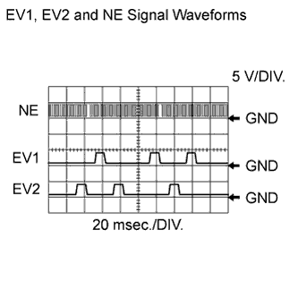
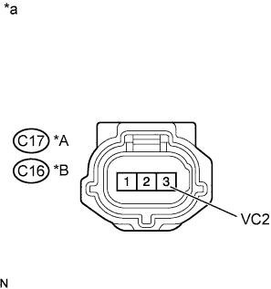
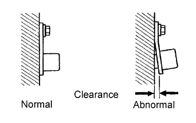

DTC P0365 Camshaft Position Sensor "B" Circuit (Bank 1) |
DTC P0367 Camshaft Position Sensor "B" Circuit Low Input (Bank 1) |
DTC P0368 Camshaft Position Sensor "B" Circuit High Input (Bank 1) |
DTC P0390 Camshaft Position Sensor "B" Circuit (Bank 2) |
DTC P0392 Camshaft Position Sensor "B" Circuit Low Input (Bank 2) |
DTC P0393 Camshaft Position Sensor "B" Circuit High Input (Bank 2) |
| DTC No. | DTC Detection Condition | Trouble Area |
| P0365 P0390 | No VVT sensor signal is sent to the ECM at an engine speed of 600 rpm or more (1 trip detection logic). |
|
| P0367 P0392 | Output voltage of VVT sensor is below 0.3 V for 4 seconds (1 trip detection logic). |
|
| P0368 P0393 | Output voltage of VVT sensor is higher than 4.7 V for 4 seconds (1 trip detection logic). |
|
|  |
| Tester Connection | Tool Setting | Condition | Specified Condition |
| C28-6 (NE+) - C28-5 (NE-) | 5 V/DIV. 20 msec./DIV. | Cranking or idling | The correct waveform is as shown |
| C28-13 (EV1+) - C28-14 (EV1-) | 5 V/DIV. 20 msec./DIV. | Cranking or idling | The correct waveform is as shown |
| C28-18 (EV2+) - C28-17 (EV2-) | 5 V/DIV. 20 msec./DIV. | Cranking or idling | The correct waveform is as shown |
| Required Sensors/Components (Main) | VVT position sensor (for Bank 1 and 2) |
| Required Sensors/Components (Related) | Crankshaft position sensor |
| Frequency of Operation | Continuous |
| 1.CHECK HARNESS AND CONNECTOR (SENSOR POWER SOURCE) |
|  |
Disconnect the VVT sensor connector.
Measure the voltage according to the value(s) in the table below.
| Tester Connection | Switch Condition | Specified Condition |
| 3 (VC2) - Body ground | Engine switch on (IG) | 4.5 to 5.0 V |
| *A | Bank 1 |
| *B | Bank 2 |
| *a | Front view of wire harness connector (to VVT Sensor) |
|
| ||||
| OK | |
| 2.CHECK HARNESS AND CONNECTOR (VVT SENSOR - ECM) |
Disconnect the VVT sensor connector.
Disconnect the ECM connector.
Measure the resistance according to the value(s) in the table below.
| Tester Connection | Condition | Specified Condition |
| C17-1 (EX+) - C28-13 (EV1+) | Always | Below 1 Ω |
| C17-2 (EX-) - C28-14 (EV1-) | Always | Below 1 Ω |
| C16-1 (EX+) - C28-18 (EV2+) | Always | Below 1 Ω |
| C16-2 (EX-) - C28-17 (EV2-) | Always | Below 1 Ω |
| C17-1 (EX+) or C28-13 (EV1+) - Body ground | Always | 10 kΩ or higher |
| C17-2 (EX-) or C28-14 (EV1-) - Body ground | Always | 10 kΩ or higher |
| C16-1 (EX+) or C28-18 (EV2+) - Body ground | Always | 10 kΩ or higher |
| C16-2 (EX-) or C28-17 (EV2-) - Body ground | Always | 10 kΩ or higher |
|
| ||||
| OK | |
| 3.CHECK SENSOR INSTALLATION (VVT SENSOR FOR EXHAUST CAMSHAFT) |
|  |
Check the VVT sensor installation.
|
| ||||
| OK | |
| 4.INSPECT EXHAUST CAMSHAFT |
Check the teeth of the camshaft.
|
| ||||
| OK | |
| 5.REPLACE VVT SENSOR |
Replace the VVT sensor (Click here).
| NEXT | |
| 6.CHECK WHETHER DTC OUTPUT RECURS |
Connect the intelligent tester to the DLC3.
Turn the engine switch on (IG).
Turn the tester on.
Clear DTCs (Click here).
Start the engine and idle it for 10 seconds or more.
Enter the following menus: Powertrain / Engine and ECT / DTC / Pending.
Read DTCs.
| Display (DTC Output) | Proceed to |
| No DTC is output | A |
| P0365, P0367, P0368, P0390, P0392 or P0393 is output | B |
|
| ||||
| A | ||
| ||